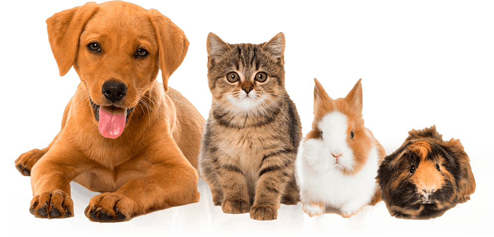

QUIENES SOMOS

Nuestra misión es garantizar la salud de los animales mediante una buena atención, diagnostico y dandoles un buen tratamiento adecuado a nuestros pacientes.
Catalogarnos como una de las mejores veterinarias gracias a su atención, diagnóstico y tratamiento de diversas enfermedades mediante la utilización de innovaciones tecnológicas como: Aparatos novedosos que faciliten el diagnóstico y así mismo la cura del paciente.
Nuestro giro está enfocado a los principales servicios que ofrecemos en la veterinaria.